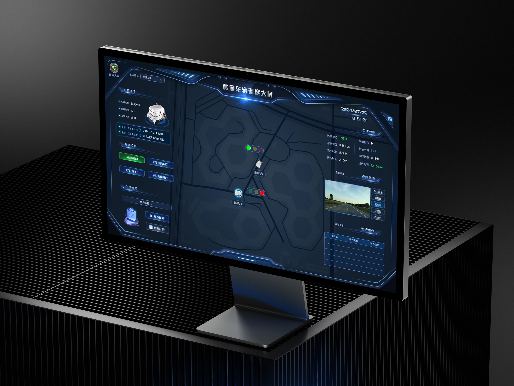
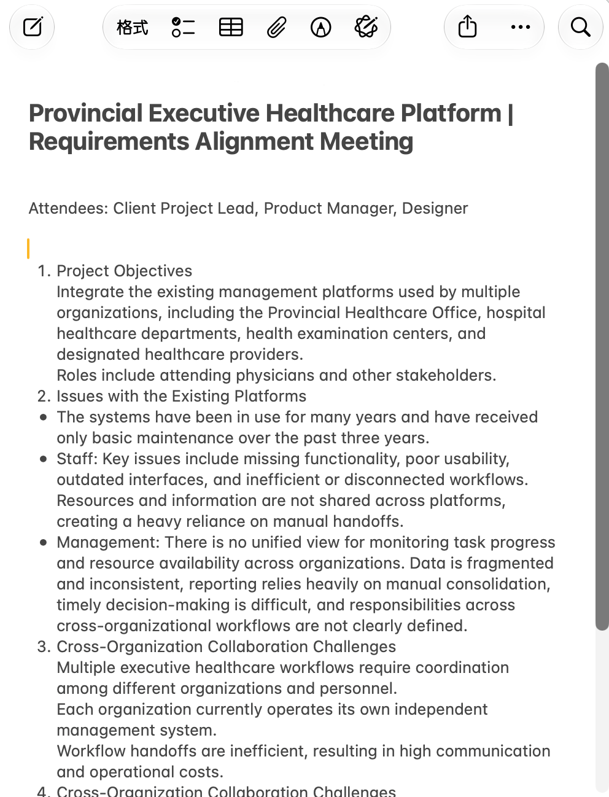

Understand the operating context
I work from roles, tasks, constraints, and real operating conditions before deciding how the interface should behave.
About / Liu Yinggang
For nearly seven years, I’ve designed complex B2B and public-sector products across healthcare, energy, and autonomous mining. My work connects business requirements, field context, interface systems, and engineering delivery.



Across nearly seven years of enterprise and public-sector product work, I have contributed from field research and workflow definition through prototypes, visual systems, production assets, and implementation QA.
I work from roles, tasks, constraints, and real operating conditions before deciding how the interface should behave.
I turn permissions, states, exceptions, maps, video, and dense data into a hierarchy that supports the current decision.
My work spans web administration, command dashboards, vehicle HMI, and remote-driving cabins with different viewing and control conditions.
I build standards, prepare assets, collaborate with engineering, and review implementation so the shipped product retains the intended logic.
Healthcare coordination, autonomous mining, and cloud control each required a different balance of workflow depth, environmental context, and technical delivery.



Apr 2026 to present
Remote
Project-based design for enterprise dashboards and B2B administration products, covering requirements synthesis, information architecture, interaction, visual design, and engineering delivery.
Sep 2024 to Mar 2026
Jinan, China
Medical SaaS, hospital dashboards, AI-assisted diagnostic modules, reusable product patterns, and human-in-the-loop clinical interaction flows.
Mar 2023 to Sep 2024
Jinan, China
Remote-driving cabins, vehicle HMI, cloud-control dashboards, and risk-control products for autonomous mining operations.
Oct 2021 to Jan 2023
Jinan, China
Emergency-care dashboards, smart agriculture visualization, and the redesign of a core psychological assessment workflow.
Mar 2019 to Oct 2021
Jinan, China
Power command dashboards, the Online State Grid app, and delivery leadership for a five-person design team.
I use AI for synthesis, exploration, prototyping, asset organization, and design checks. Product judgment, interaction decisions, and delivery quality remain human-led.
Figma, MasterGo, Photoshop, Illustrator, ECharts and DataV collaboration, Blender, Cinema 4D, and After Effects.
Bachelor's degree in Product Design, Jiujiang University, 2015-2019. Google UX Design Professional Certificate, 2025. CET-4.